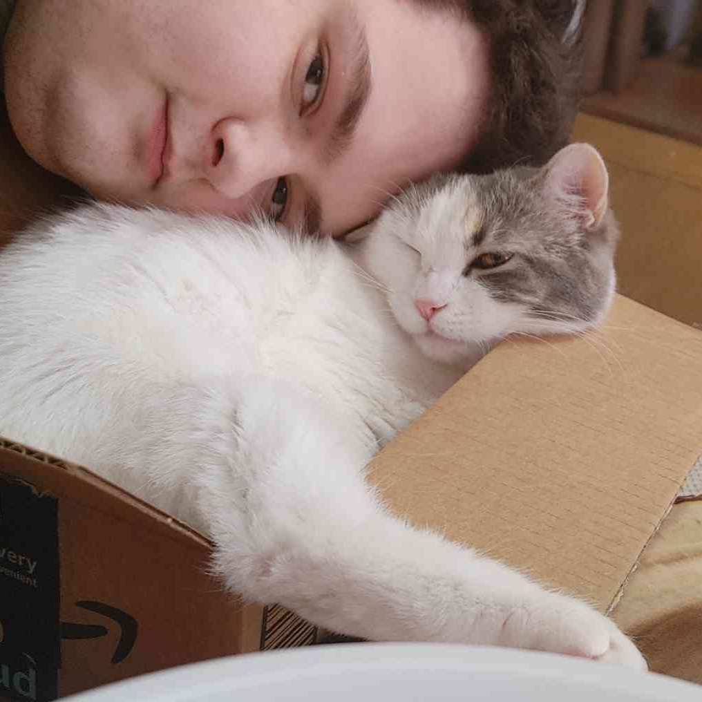

Computer Science B.S. candidate (Full Sail University, Feb 2026) building clean, functional applications. I enjoy taking projects from idea to a shippable build: reliable data, solid integrations, and the details that make software dependable. Seeking a software engineering internship or entry-level role. Available immediately. Open to relocation.
I’ve been around computers for as long as I can remember. My father started building software early in his life, back when the discipline was still forming in the way we recognize it today, and that history in the family made technology feel less like a black box and more like something you can understand and shape.
The moment it really first clicked for me was when I was six or seven and my dad was showing off a new laptop to friends. His benchmark was running Half-Life 2. I wanted to try it so badly that he set me up with his Steam account and let me play. That experience didn’t just make me love games, it made me curious about how digital worlds are built.
Over time, that curiosity turned into hands-on tinkering: building maps in the Hammer editor for Half-Life 2 and Team Fortress 2, experimenting with ROM hacking in games like EarthBound and Super Mario World, and even a brief stretch modding cheaply-made server economies into Minecraft. Those projects taught me how to iterate quickly, debug creatively, and ship improvements people can actually use.
Today, I focus on building clean, dependable applications. I’m also a Type 1 diabetic, so I’m especially interested in how software can reduce friction in day-to-day health management. One of my most consistent benchmark project themes has been diabetes tracking and management apps, most recently Sucra.